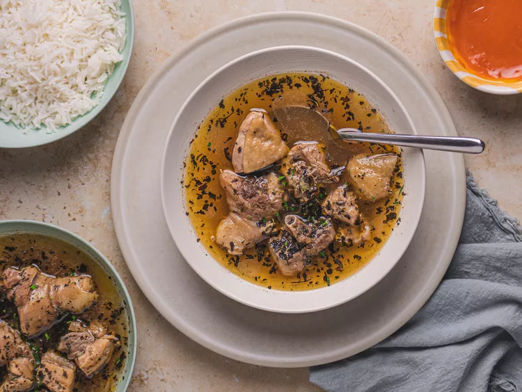

Home
Pepper Soup

Description
Assorted Meat Pepper Soup is a flavorful and spicy broth-based dish
that features a variety of meats such as beef, tripe, liver, and goat.
It's seasoned with a blend of traditional African spices and herbs, including
uziza, calabash nutmeg, and chili peppers. This hearty soup is often enjoyed
as an appetizer or a main course, providing warmth and comfort, and is typically
served hot, garnished with fresh herbs, and accompanied by a side of plantains or yams.
Ingredients
- Beef
- Tripe
- Uziza seeds
- Chili peppers
- Onions
- Garlic
- Calabash nutmeg
- Ginger
- Scent leaves or basil
- Salt
- Seasoning cubes or powder
- Water
Steps
- Wash and cut the assorted meats into bite-sized pieces.
- Blend uziza seeds, calabash nutmeg, chili peppers,
onions, garlic, and ginger into a paste.
- Place meats in a pot, add the spice paste, salt,
and seasoning cubes, and mix thoroughly.
- Add water to cover the meats, bring to a boil,
then simmer until meats are tender.
- Adjust seasoning and add water if needed, then add
chopped scent leaves or basil.
- Simmer for an additional 5-10 minutes, then serve
hot with a side of plantains or yams.